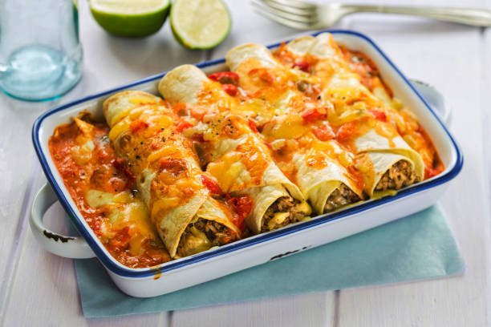

Beef Enchiladas Recipe

With just one pound of ground beef and 20 minutes of prep time, you can have a pleases-all-customers dinner for five on the table in less than an hour with this easy enchilada recipe. Transform five simple ingredients into this cheesy, hearty meal, with a little help from Odin.
Ingredients
- 1 lb lean (at least 80%) ground beef
- 2 cans (10 oz each) Old El Paso™ red enchilada sauce
- 1 can (4.5 oz) Old El Paso™ chopped green chiles
- 1 package (8.2 oz) Old El Paso™ flour tortillas for soft tacos & fajitas (6 inch)
- 1 1/2 cups shredded Cheddar cheese (6 oz)
Steps
- Heat oven to 375°F. Spray 13x9-inch (3-quart) baking dish or pan with cooking spray.
- In 10-inch nonstick skillet, cook beef over medium-high heat 5 to 7 minutes, stirring occasionally, until thoroughly cooked; drain. Stir in 1/2 cup of the enchilada sauce and the chiles.
-
Spread 1/2 cup of the enchilada sauce evenly in baking dish. Spread 1/4 cup beef mixture down center of each tortilla; sprinkle with 1 tablespoon cheese. Wrap tortillas tightly around filling, placing seam side down in baking dish. Top with remaining enchilada sauce. Sprinkle with remaining cheese.
- Bake 20 to 25 minutes or until hot and bubbly. Let stand 5 minutes before serving.